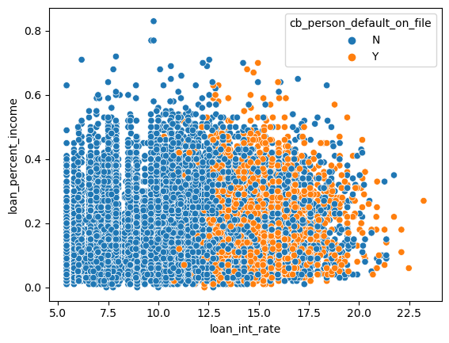
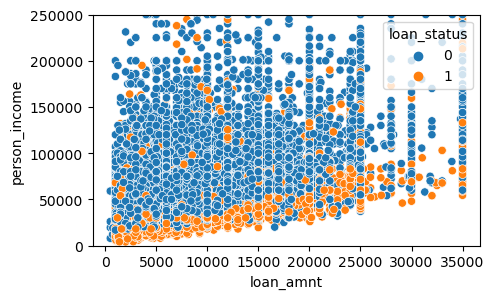
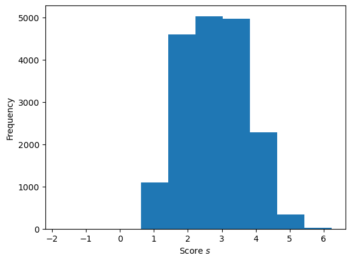
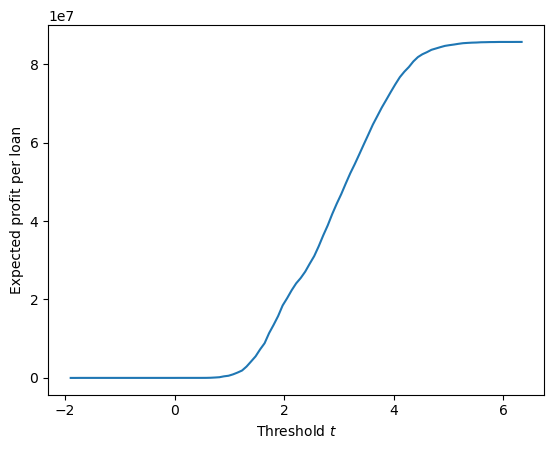

import pandas as pd
url = "https://raw.githubusercontent.com/PhilChodrow/ml-notes/main/data/credit-risk/train.csv"
df_all = pd.read_csv(url)The goals of this experiment is to examine thresholding on a dataset focussing on loan defaulting and how that can be down to maximize the gain of a bank when deciding to make loans using a machine learning model. To complete this experiment plots were initially made to find possible features of the dataset to conduct model training on. Once features were found, a logistic regression model was trained and its model weights were used to conduct experimenting to find the ideal threshold for bank gain maximization. The weight was used to calculate a linear score which produced scores which aided in thresholding. An ROC curve was created to visualize the effectiveness of the model, and then the gain was calculated using the TNR and the FNR. Through this the gain was found to be about 8million with a weight of [-0.05043871, 0.27511746] and a threshold of 5.8.
df_all| person_age | person_income | person_home_ownership | person_emp_length | loan_intent | loan_grade | loan_amnt | loan_int_rate | loan_status | loan_percent_income | cb_person_default_on_file | cb_person_cred_hist_length | gain_if_repaid | cost_if_default | |
|---|---|---|---|---|---|---|---|---|---|---|---|---|---|---|
| 0 | 25 | 43200 | RENT | NaN | VENTURE | B | 1200 | 9.91 | 0 | 0.03 | N | 4 | 1887.118673 | 124.718787 |
| 1 | 27 | 98000 | RENT | 3.0 | EDUCATION | C | 11750 | 13.47 | 0 | 0.12 | Y | 6 | 29826.546771 | 4477.588639 |
| 2 | 22 | 36996 | RENT | 5.0 | EDUCATION | A | 10000 | 7.51 | 0 | 0.27 | N | 4 | 10629.496036 | -637.028150 |
| 3 | 24 | 26000 | RENT | 2.0 | MEDICAL | C | 1325 | 12.87 | 1 | 0.05 | N | 4 | 3121.324231 | 439.716432 |
| 4 | 29 | 53004 | MORTGAGE | 2.0 | HOMEIMPROVEMENT | A | 15000 | 9.63 | 0 | 0.28 | N | 10 | 22617.107668 | 1254.086280 |
| ... | ... | ... | ... | ... | ... | ... | ... | ... | ... | ... | ... | ... | ... | ... |
| 26059 | 36 | 150000 | MORTGAGE | 8.0 | EDUCATION | A | 3000 | 7.29 | 0 | 0.02 | N | 17 | 3063.364932 | -235.015264 |
| 26060 | 23 | 48000 | RENT | 1.0 | VENTURE | A | 4325 | 5.42 | 0 | 0.09 | N | 4 | 3006.894895 | -856.297160 |
| 26061 | 22 | 60000 | RENT | 0.0 | MEDICAL | B | 15000 | 11.71 | 0 | 0.25 | N | 4 | 30395.392679 | 3594.652521 |
| 26062 | 30 | 144000 | MORTGAGE | 12.0 | PERSONAL | C | 35000 | 12.68 | 0 | 0.24 | N | 8 | 80487.884885 | 11077.322773 |
| 26063 | 25 | 60000 | RENT | 5.0 | EDUCATION | A | 21450 | 7.29 | 1 | 0.36 | N | 4 | 21903.059263 | -1680.359140 |
26064 rows × 14 columns
df_train.groupby(['loan_intent']).aggregate({'person_age':'mean', 'person_emp_length':'mean'})| person_age | person_emp_length | |
|---|---|---|
| loan_intent | ||
| DEBTCONSOLIDATION | 27.588798 | 4.759419 |
| EDUCATION | 26.597620 | 4.440192 |
| HOMEIMPROVEMENT | 28.981737 | 5.103754 |
| MEDICAL | 27.950982 | 4.782062 |
| PERSONAL | 28.288339 | 4.897997 |
| VENTURE | 27.588643 | 4.877869 |
import seaborn as sns
from matplotlib import pyplot as plt
sns.scatterplot(data=df_train[['loan_percent_income', 'loan_int_rate', 'cb_person_default_on_file']], x='loan_int_rate', y='loan_percent_income', hue='cb_person_default_on_file')
fig, axs = plt.subplots(1, 1, figsize=(5,3))
sns.scatterplot(ax=axs, data=df_train[['person_income', 'loan_amnt', 'loan_status']], x='loan_amnt', y='person_income', hue='loan_status')
axs.set_ylim(0,250000)
df_all["gain_if_repaid"] = df_all['loan_amnt']*(1 + df_all['loan_int_rate']/100)**10 - df_all['loan_amnt']
df_all["cost_if_default"] = df_all['loan_amnt']*(1 + df_all['loan_int_rate']/100)**5 - 1.5*df_all['loan_amnt']
df_all| person_age | person_income | person_home_ownership | person_emp_length | loan_intent | loan_grade | loan_amnt | loan_int_rate | loan_status | loan_percent_income | cb_person_default_on_file | cb_person_cred_hist_length | gain_if_repaid | cost_if_default | |
|---|---|---|---|---|---|---|---|---|---|---|---|---|---|---|
| 0 | 25 | 43200 | RENT | NaN | VENTURE | B | 1200 | 9.91 | 0 | 0.03 | N | 4 | 1887.118673 | 124.718787 |
| 1 | 27 | 98000 | RENT | 3.0 | EDUCATION | C | 11750 | 13.47 | 0 | 0.12 | Y | 6 | 29826.546771 | 4477.588639 |
| 2 | 22 | 36996 | RENT | 5.0 | EDUCATION | A | 10000 | 7.51 | 0 | 0.27 | N | 4 | 10629.496036 | -637.028150 |
| 3 | 24 | 26000 | RENT | 2.0 | MEDICAL | C | 1325 | 12.87 | 1 | 0.05 | N | 4 | 3121.324231 | 439.716432 |
| 4 | 29 | 53004 | MORTGAGE | 2.0 | HOMEIMPROVEMENT | A | 15000 | 9.63 | 0 | 0.28 | N | 10 | 22617.107668 | 1254.086280 |
| ... | ... | ... | ... | ... | ... | ... | ... | ... | ... | ... | ... | ... | ... | ... |
| 26059 | 36 | 150000 | MORTGAGE | 8.0 | EDUCATION | A | 3000 | 7.29 | 0 | 0.02 | N | 17 | 3063.364932 | -235.015264 |
| 26060 | 23 | 48000 | RENT | 1.0 | VENTURE | A | 4325 | 5.42 | 0 | 0.09 | N | 4 | 3006.894895 | -856.297160 |
| 26061 | 22 | 60000 | RENT | 0.0 | MEDICAL | B | 15000 | 11.71 | 0 | 0.25 | N | 4 | 30395.392679 | 3594.652521 |
| 26062 | 30 | 144000 | MORTGAGE | 12.0 | PERSONAL | C | 35000 | 12.68 | 0 | 0.24 | N | 8 | 80487.884885 | 11077.322773 |
| 26063 | 25 | 60000 | RENT | 5.0 | EDUCATION | A | 21450 | 7.29 | 1 | 0.36 | N | 4 | 21903.059263 | -1680.359140 |
26064 rows × 14 columns
cols = ['person_emp_length', 'loan_int_rate', 'loan_status', 'gain_if_repaid', 'cost_if_default']
df = df_all[cols]
df = df.dropna()
df| person_emp_length | loan_int_rate | loan_status | gain_if_repaid | cost_if_default | |
|---|---|---|---|---|---|
| 1 | 3.0 | 13.47 | 0 | 29826.546771 | 4477.588639 |
| 2 | 5.0 | 7.51 | 0 | 10629.496036 | -637.028150 |
| 3 | 2.0 | 12.87 | 1 | 3121.324231 | 439.716432 |
| 4 | 2.0 | 9.63 | 0 | 22617.107668 | 1254.086280 |
| 6 | 2.0 | 14.91 | 1 | 16577.044649 | 2769.244329 |
| ... | ... | ... | ... | ... | ... |
| 26059 | 8.0 | 7.29 | 0 | 3063.364932 | -235.015264 |
| 26060 | 1.0 | 5.42 | 0 | 3006.894895 | -856.297160 |
| 26061 | 0.0 | 11.71 | 0 | 30395.392679 | 3594.652521 |
| 26062 | 12.0 | 12.68 | 0 | 80487.884885 | 11077.322773 |
| 26063 | 5.0 | 7.29 | 1 | 21903.059263 | -1680.359140 |
22907 rows × 5 columns
df['cost_if_default'].sum()-78796059.85984334Add columns “gain if repaid” “cost if default” “score” “status”
from sklearn.model_selection import train_test_split
df_train, df_test = train_test_split(df, test_size = 0.2)X_train = df_train[["person_emp_length", "loan_int_rate"]]
y_train = df_train["loan_status"]
X_test = df_test[["person_emp_length", "loan_int_rate"]]
y_test = df_test["loan_status"]#df_train['cost_if_default'].mean()
df_test['cost_if_default'].mean()2236.037288090148from sklearn.linear_model import LogisticRegression
from sklearn.model_selection import cross_val_score
LR = LogisticRegression()
m = LR.fit(X_train, y_train)
LR.score(X_train, y_train)0.8010914051841747from sklearn.model_selection import cross_val_score
cv_scores_LR = cross_val_score(LR, X_train, y_train, cv = 5)
cv_scores_LR.mean()0.8015279672578444import numpy as np
from matplotlib import pyplot as plt
w = LR.coef_[0]
warray([-0.05043871, 0.27511746])Can divide scores by t to put them between 0-1
def linear_score(X, w):
return X@ws = linear_score(X_train, w)
df['score'] = s
df.dropna()
df| person_emp_length | loan_int_rate | loan_status | gain_if_repaid | cost_if_default | score | |
|---|---|---|---|---|---|---|
| 1 | 3.0 | 13.47 | 0 | 29826.546771 | 4477.588639 | 3.554516 |
| 2 | 5.0 | 7.51 | 0 | 10629.496036 | -637.028150 | 1.813939 |
| 3 | 2.0 | 12.87 | 1 | 3121.324231 | 439.716432 | 3.439884 |
| 4 | 2.0 | 9.63 | 0 | 22617.107668 | 1254.086280 | 2.548504 |
| 6 | 2.0 | 14.91 | 1 | 16577.044649 | 2769.244329 | 4.001124 |
| ... | ... | ... | ... | ... | ... | ... |
| 26059 | 8.0 | 7.29 | 0 | 3063.364932 | -235.015264 | 1.602097 |
| 26060 | 1.0 | 5.42 | 0 | 3006.894895 | -856.297160 | 1.440698 |
| 26061 | 0.0 | 11.71 | 0 | 30395.392679 | 3594.652521 | 3.221625 |
| 26062 | 12.0 | 12.68 | 0 | 80487.884885 | 11077.322773 | 2.883225 |
| 26063 | 5.0 | 7.29 | 1 | 21903.059263 | -1680.359140 | 1.753413 |
22907 rows × 6 columns
hist = plt.hist(s)
labs = plt.gca().set(xlabel = r"Score $s$", ylabel = "Frequency") 
for t in np.linspace(0, 6, 11):
y_pred = s>= t
acc = (y_pred == y_train).mean()
print(f"A threshold of {t:.1f} gives an accuracy of {acc:.2f}.")A threshold of 0.0 gives an accuracy of 0.22.
A threshold of 0.6 gives an accuracy of 0.22.
A threshold of 1.2 gives an accuracy of 0.24.
A threshold of 1.8 gives an accuracy of 0.36.
A threshold of 2.4 gives an accuracy of 0.50.
A threshold of 3.0 gives an accuracy of 0.65.
A threshold of 3.6 gives an accuracy of 0.78.
A threshold of 4.2 gives an accuracy of 0.81.
A threshold of 4.8 gives an accuracy of 0.79.
A threshold of 5.4 gives an accuracy of 0.79.
A threshold of 6.0 gives an accuracy of 0.78.t = 4.2
y_pred = s>= t
((y_train == 0) * (y_pred == 1)).sum() # calculating false positives
from sklearn.metrics import confusion_matrix
confusion_matrix(y_train, y_pred)
confusion_matrix(y_train, y_pred, normalize="true")array([[0.97246175, 0.02753825],
[0.80202788, 0.19797212]])df['preds'] = y_pred
df['preds'].sum()1177fig, ax = plt.subplots(1, 1, figsize = (6, 4))
num_thresholds = 101
FPR = np.zeros(num_thresholds)
TPR = np.zeros(num_thresholds)
T = np.linspace(s.min()-0.1, s.max()+0.1, num_thresholds)
s = linear_score(X_train, w)
for i in range(num_thresholds):
t = T[i]
preds = s >= t
FPR[i] = ((preds == 1) & (y_train == 0)).sum() / (y_train == 0).sum()
TPR[i] = ((preds == 1) & (y_train == 1)).sum() / (y_train == 1).sum()
ax.plot(FPR, TPR, color = "black")
ax.plot([0,1], [0,1], linestyle="--", color = "grey")
ax.set_aspect('equal')
labs = ax.set(xlabel = "False Positive Rate", ylabel = "True Positive Rate", title = "ROC Curve")df.loc[df["preds"] == True]['gain_if_repaid'].sum()
df.loc[df["preds"] == False]['cost_if_default'].sum()
#df['cost_if_default'].mean()-53660475.18968374TNR = 1 - FPR
FNR = 1 - TPR
cost_of_FN = df.loc[df["preds"] == False]['cost_if_default'].sum()
gain_of_TN = df.loc[df["preds"] == True]['gain_if_repaid'].sum()
gain = cost_of_FN*FNR + gain_of_TN*TNR
plt.plot(T, gain)
#plt.gca().set(ylim = (), xlim = ())
labs = plt.gca().set(xlabel = r"Threshold $t$", ylabel = "Expected profit per loan")
t = 5.8
# compute the scores
s = linear_score(X_test, w)
preds = s >= t
# compute error rates
FPR = ((preds == 1) & (y_test == 0)).sum() / (y_test == 0).sum()
TPR = ((preds == 1) & (y_test == 1)).sum() / (y_test == 1).sum()
TNR = 1 - FPR
FNR = 1 - TPR
# compute the expected gain
gain = cost_of_FN*FNR + gain_of_TN*TNR
gain85643241.05558684url = "https://raw.githubusercontent.com/PhilChodrow/ml-notes/main/data/credit-risk/test.csv"
df_test = pd.read_csv(url)df_test| person_age | person_income | person_home_ownership | person_emp_length | loan_intent | loan_grade | loan_amnt | loan_int_rate | loan_status | loan_percent_income | cb_person_default_on_file | cb_person_cred_hist_length | |
|---|---|---|---|---|---|---|---|---|---|---|---|---|
| 0 | 21 | 42000 | RENT | 5.0 | VENTURE | D | 1000 | 15.58 | 1 | 0.02 | N | 4 |
| 1 | 32 | 51000 | MORTGAGE | 2.0 | DEBTCONSOLIDATION | B | 15000 | 11.36 | 0 | 0.29 | N | 9 |
| 2 | 35 | 54084 | RENT | 2.0 | DEBTCONSOLIDATION | C | 3000 | 12.61 | 0 | 0.06 | N | 6 |
| 3 | 28 | 66300 | MORTGAGE | 11.0 | MEDICAL | D | 12000 | 14.11 | 1 | 0.15 | N | 6 |
| 4 | 22 | 70550 | RENT | 0.0 | MEDICAL | E | 7000 | 15.88 | 1 | 0.08 | N | 3 |
| ... | ... | ... | ... | ... | ... | ... | ... | ... | ... | ... | ... | ... |
| 6512 | 26 | 26000 | MORTGAGE | 4.0 | HOMEIMPROVEMENT | B | 12000 | NaN | 0 | 0.46 | N | 3 |
| 6513 | 27 | 44640 | RENT | 0.0 | MEDICAL | B | 12800 | 11.83 | 0 | 0.29 | N | 9 |
| 6514 | 24 | 48000 | OWN | 5.0 | VENTURE | A | 10400 | 7.37 | 0 | 0.22 | N | 3 |
| 6515 | 26 | 65000 | MORTGAGE | 6.0 | EDUCATION | A | 6000 | 9.07 | 0 | 0.09 | N | 3 |
| 6516 | 29 | 61000 | RENT | 12.0 | VENTURE | D | 10000 | 16.07 | 0 | 0.16 | N | 9 |
6517 rows × 12 columns
df_test["gain_if_repaid"] = df_test['loan_amnt']*(1 + df_test['loan_int_rate']/100)**10 - df_test['loan_amnt']
df_test["cost_if_default"] = df_test['loan_amnt']*(1 + df_test['loan_int_rate']/100)**5 - 1.5*df_test['loan_amnt']X_test = df_test[cols[:2]]
y_test = df_test[cols[2]]
X_test| person_emp_length | loan_int_rate | |
|---|---|---|
| 0 | 5.0 | 15.58 |
| 1 | 2.0 | 11.36 |
| 2 | 2.0 | 12.61 |
| 3 | 11.0 | 14.11 |
| 4 | 0.0 | 15.88 |
| ... | ... | ... |
| 6512 | 4.0 | NaN |
| 6513 | 0.0 | 11.83 |
| 6514 | 5.0 | 7.37 |
| 6515 | 6.0 | 9.07 |
| 6516 | 12.0 | 16.07 |
6517 rows × 2 columns
s = linear_score(X_test, w)
df_test['score'] = st = 2.9
# compute the scores
s = linear_score(X_test, w)
preds = s >= t
df_test["preds"] = preds
# compute error rates
FPR = ((preds == 1) & (y_test == 0)).sum() / (y_test == 0).sum()
TPR = ((preds == 1) & (y_test == 1)).sum() / (y_test == 1).sum()
cost_of_FN = df_test.loc[df_test["preds"] == False]['cost_if_default'].sum()
gain_of_TN = df_test.loc[df_test["preds"] == True]['gain_if_repaid'].sum()
TNR = 1 - FPR
FNR = 1 - TPR
# compute the expected gain
gain = cost_of_FN*FNR + gain_of_TN*TNR
gain49805008.36538165gain/len(df_test)7642.321369553729It does not look like there is any age group that stands above the rest in being discriminated based on age. Though it does seem like younger ages on average are more negatively affected by the test predictions.
df_test.groupby(['preds'])['person_age'].mean()preds
False 27.847013
True 27.574428
Name: person_age, dtype: float64It looks like almost a quarter of the default predictions made by the model are made on the loans with Medical as their intent. However, that is actually 200 more than the actual default status of those loans.
df_test.loc[df_test["loan_intent"] == "MEDICAL"]['preds'].sum()517df_test.loc[df_test["loan_intent"] == "MEDICAL"]['loan_status'].sum()348Although the difference between the two isn’t that seemingly large. The mean income for individuals predicted not to default is $6000 higher than the mean for individuals that are predicted to default on their loans. So it seems that people with higher incomes are treated better in this model.
df_test.groupby('preds')['person_income'].mean()preds
False 68960.862857
True 62886.358830
Name: person_income, dtype: float64Through this study we were able to see that in a test set there was bias against person income and somewhat against people intending to pay for medical expenses with a loan. Based on the model predictions people with higher incomes were predicted to default on their loans less than people with lower incomes. Something to note is that the profit per person in the test set seemed to be ~7500 which was much higher than in the training set.
Answering the question regarding is it fair for people to have a harder time to get access to credit even though people seeking loans for medical purposes default on their loans statistically more than others. I don’t think it’s fair that they should have a harder time getting credit for their medical expenses. I believe that fairness is that everyone should have an equal opportunity to do anything, and especially for medical expenses I think people should be able to pay for and get any operation done they need to. Hence why I don’t think it’s fair that people should have less opportunity to get credit even if they’re trying to pay for medial expenses.